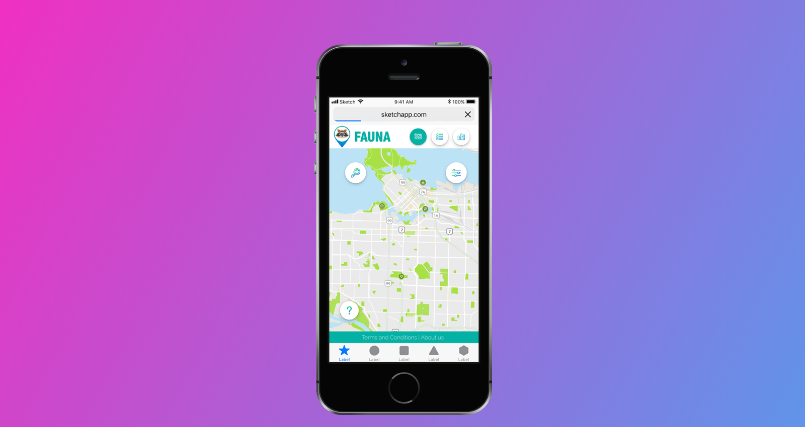

Fauna
Interactive Wildlife Locator

About
Fauna was one of the term projects at Langara College, and as such it had a few specific constrains. We had a very strict deadline of 12 weeks to come up with the concept and develop a fully functioning prototype. The theme of the project was Data Visualization, and there were particular technologies we had to use. We also had specific design tasks to complete in order to make it as close to the real world project as possible.
Since there were only five of us, each had to fulfill multiple roles. In addition to all the tasks I was chosen as the UI Design Lead of the project. As the UI Lead it was my job to make the final decision on things like colors, typography, branding assets and promotional materials. I also had to coordinate with my Design team and allocate the tasks accordingly.
- 👂🏻UX Research
- 💡Ideating
- 🛠UX Design
- 📱Interaction Design
- 🔄Prototyping
- 🔮UI Design
- 💻Front-End Dev
Hats Worn
Finding the Map
Fauna became our passion project, because living in Vancouver means coming across its rich wildlife almost on a daily basis. The concept was inspired by Indeed’s Job Spotter app that facilitates crowd-sourcing of job openings. With the work-in-progress name Animal Spotter, Fauna was made to do the same with wildlife. The idea is that users can upload a picture of an animal they saw and it will be displayed over an interactive map. Due to the time constraints we ended up using iNaturalist API as our data source, but even now we are working on a React Native Fauna app to allow people to upload directly to our service.
Identifying High-Level Goals
To begin our UX Journey we had to define our UX strategy. We created the UX Blueprint in order to identify our High-level Goals and Challenges and what we wanted the service to look like at the end. This also allowed us to define the development plan and the key metrics to measure our success. We referred to this document during development in order to keep us on track to those High-level goals.
Understanding the Journey
Through research we defined our main user, and an occasional user Personas. There were 2 Personas for the main user, because we found that there are people who would like to see a wild animal roaming around, and those who would like to avoid it. This heavily influenced our User Flow, as we decided to add the Filters to the map. After completing the User Flow we identified parts of it essential for the MVP and focused on them.
Perfecting the Prototype
In order to design the service we envisioned, we had multiple prototyping runs. We had three main pages in the service, the Map, the List and the Stats. The latter one would display a few key statistics about the animal. During the wireframing process we also looked at the user interaction design. The goal was to make the service intuitive, so we decided to use Goggle Maps API and layer our data on top of it.
Component-based Design
The team decided to use React.js library as its primary technology and we had to take that into consideration. We had to create the UI Design based on each component, and in order to do that the Designers had to familiarize themselves with all the components used. To simplify the process, the designers also took part in the front-end development, implementing the UI design of the components.
Branding
In addition to designing the UI of the service, we had to design its Branding. We wanted the brand to be associated with nature, so we decided to use cool flat teal color and a simple blue-to-green gradient. The main goal for the logo was to make the brand friendly and relatable, so we decided to create a raccoon character. To finalize the brand, we created a set of branded stationery.
Promoting the Brand
In order to promote Fauna we created a number of Social Media assets for different social medias. My focus was on Facebook, Twitter, Instagram and LinkedIn. LinkedIn was used to invite people to our MVP Presentation at Langara College and you can see it in this video.